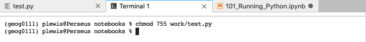

019 Python codes
Introduction
Whilst writing codes in Jupyter notebooks is useful and powerful, you will find over the course of GEOG0111 that you will need to develop your own codes as Python scripts. These are more portable than codes embedded in notebooks, and can also be used to develop your own code libraries.
In this session, you will learn how to generate and use Python scripts from a notebook. In particular, you will learn the typical format of such scripts, and generate some simple scripts around some basic functions.
At the end of the session, there is a practical exercise for you to do and submit. It does not provide part of your formal assessment, but it is important that you do the work and submit it, so we know if you are on track or need further help. If you do not submit the work, we cannot help you in this way.
Prerequisites
You will need some understanding of the following:
In particular, you will need to recall how to use:
unixcommands:ls -l; chmodfunctionsimport
Running Python Code in a file
We will generally use these Jupyter notebooks for running you Python codes, but you should also learn how to develop and run Python codes outside of the notebook. We provide a quick example of that here.
Running a Python script
Python codes are written in files with the suffix .py, e.g. geog0111/helloWorld.py.
If the file is defined as a Python script, then we can run. it from a shell in the same way we would run any other unix command:
!geog0111/helloWorld.py
hello world
A Python script is a Python code file that contains:
#!/usr/bin/env python
as the first line in the file, and is executable. We can see if a file is executable by getting a 'long' listing using the unix command ls -l:
!ls -l geog0111/helloWorld.py
-rwxr-xr-x 1 plewis staff 514 6 Sep 22:34 [31mgeog0111/helloWorld.py[m[m
The first field gives us the file permissions:
-rwxr-xr-x
with the x bit telling us that it is executable. The permissions for this file are set to 755 (111 101 101 in octal) which we can set with the unix command:
%%bash
chmod 755 geog0111/helloWorld.py
ls -l geog0111/helloWorld.py
-rwxr-xr-x 1 plewis staff 514 6 Sep 22:34 geog0111/helloWorld.py
Running Python code from Python
We can also run the Python code contained in geog0111/helloWorld.py from a notebook cell using %run (or from an ipython prompt using just run):
%run geog0111/helloWorld.py
hello world
Another thing we can do is to import the code from the Python file into Python:
from geog0111.helloWorld import helloWorld
helloWorld()
hello world
This import statement imports the module helloWorld from the library geog0111 (w
Form of a Python script
We will go into more details on this in later classes, but the main format of a Python file should be along the lines of the following example:
#!/usr/bin/env python
# -*- coding: utf-8 -*-
'''
helloWorld
Purpose:
function print the string 'hello world'
'''
__author__ = "P Lewis"
__copyright__ = "Copyright 2020 P Lewis"
__license__ = "GPLv3"
__email__ = "p.lewis@ucl.ac.uk"
def helloWorld():
'''
function to print the string 'hello world'
'''
print('hello world')
# example calling the function
def main():
helloWorld()
if __name__ == "__main__":
# execute only if run as a script
main()
This same code is contained in the file geog0111/helloWorld.py. Although the amount of comments and code in there might seem a little overkill just to print out hello world, it is good for you to get into the habit of writing your Python codes in this way.
To briefly explain the blocks of code:
#!/usr/bin/env python
# -*- coding: utf-8 -*-
This first line of the file allows the shell to know that this file should be interpreted with Python. It is good practice for you to include this as the first line of your Python codes so they can be run as scripts. The second line here is optional, but provides information on the python file encoding.
'''
helloWorld
Purpose:
function print the string 'hello world'
'''
__author__ = "P Lewis"
__copyright__ = "Copyright 2020 P Lewis"
__license__ = "GPLv3"
__email__ = "p.lewis@ucl.ac.uk"
We then have a document string (contained within pairs of triple quotes) describing the purpose and some features of the code in this file. We provide some further information as variables written in the form __var__ as relevant metadata for the file.
def helloWorld():
'''
function to print the string 'hello world'
'''
print('hello world')
Next, we define a function containing the code we want. In this case, the main body of the code is simply:
print('hello world')
as in the examples above. The syntax def helloWorld(): defines a function called helloWorld with no arguments (there is nothing defined here in the brackets). The code for the function is indented (4 spaces).
After defining the function, we give a document string to associate with it and give users help information:
help(helloWorld)
In the last part of the file, we provide some utilities that allow the file to be run as a script.
First, we define a function called main() that provides an example of calling the function we have created:
# example calling the function
def main():
helloWorld()
This should be accompanied by some comments of doc-string explaining what we are doing in the code.
The final part of the file contains the code that allows this file to be run as a script:
if __name__ == "__main__":
# execute only if run as a script
main()
This is pretty standard syntax, so we will not go into details now, other than to note that this is the mechanism by which running this file as a script makes the call to main(), which then calls our example code running helloWorld().
The final thing we need to do is to make our script executable. This involves setting some permissions on the file with the function Path().chmod(). The code to do this, for the file geog0111/helloWorld.py from Python is:
from pathlib import Path
Path('geog0111/helloWorld.py').chmod(int('755', base=8))
Sometimes, we might use the unix (bash) shell equivalent command to do this:
%%bash
chmod 755 geog0111/helloWorld.py
Now we can run the Python code from a code cell:
%run geog0111/helloWorld.py
Note that using %run in the code cell (or just run in other Python codes) allows us to run a python command from a Python file in the cell, rather than the usual Python codes.
An alternative is to make the whole cell into one to run bash commands with %%bash:
%%bash
geog0111/helloWorld.py
Editing a file
To do the task below, you will need to invoke a text editor of some sort to create the Python file. There are several ways you can do this, depending on how you are using these notebooks.
From JupyterLab
If you are using this notebook in JupyterLab, go to the launcher tab and you should see various tools that you can launch:

Among these you will see 'text file'. Launch a text file, write your Python code into the file, and save it (File -> Save As) to the Python file name you want in your work directory (e.g. work/test.py).
Alternatively, use the menu item File -> New -> Text File to open a new text file.
To change the permissions on the file from JupyterLab, open a shell (e.g. using
File -> New -> Terminal) and in there, type (assuming your file is called work/test.py):
chmod 755 work/test.py

Jupyter notebook
Use a text editor
To do the task below, you will need to invoke a text editor of some sort to create the Python file. Ideally, you should learn to do this outside of the notebook: invoke a text editor on your computer, put your Python code into the file, and save it to the desired location.
Create in bash
We can simply create a file in a bash script by following the example below:
%%bash
# code between the next line and the
# End Of File (EOF) marker will be saved in
# to the file work/myHelloWorld.py
cat << EOF > work/myHelloWorld.py
#!/usr/bin/env python
# -*- coding: utf-8 -*-
'''
helloWorld
Purpose:
function print the string 'hello world'
'''
__author__ = "P Lewis"
__copyright__ = "Copyright 2020 P Lewis"
__license__ = "GPLv3"
__email__ = "p.lewis@ucl.ac.uk"
def helloWorld():
'''
function to print the string 'hello world'
'''
print('hello world')
# example calling the function
def main():
helloWorld()
if __name__ == "__main__":
# execute only if run as a script
main()
EOF
# Chmod 755 to make the file executable
chmod 755 work/myHelloWorld.py
This should have created a file called work/myHelloWorld.py and made it executable (using bash to call chmod, rather than doing it in Python as above).
Now run it as above:
%run work/myHelloWorld.py
You should now be able to load this Python file directly in Jupyter, using File -> Open then click through to the Python file you generated.
Once you save the file, run the Python code again (%run work/myHelloWorld.py).
Exercise
- Create a Python file in your
workfolder based on the example above and call itwork/myFirstCode.py - Modify the code to achieve the following:
- make a function called
myFirstCodethat prints out a greeting message - update the document strings in the file as appropriate
- make a function called
Adding command line arguments
We have achieved something today, in creating a Python code in a file, making it executable, and running it. However, it is a little limited in scope: it just prints out the message the we hard wired into it.
It is better to design codes to have some more flexibility than this. Suppose we want to be able to run our code work/myFirstCode.py so that we can pass a name though to the script and print out, e.g.:
hello from Fred
or
hello from Hermione
How could we achieve that?
The answer, as we have seen before, is to pass an argument to our function. So, instead of having:
def helloWorld():
'''
function to print the string 'hello world'
'''
print('hello from me')
we pass an argument that we might call name, and conveniently pass this through to the print() statement using an f-string.
def helloWorld(name):
'''
function to print the string 'hello world'
'''
print(f'hello from {name}')
Let's test that before going further:
def hello(name):
'''
function to print 'hello from {name}'
'''
print(f'hello from {name}')
# call the function with some argument
hello('Fred')
hello('Hermione')
We have seen that that code operates correctly -- it is very good practice to test any small incremental developments in your code in this way.
Next, let's think about how to embed that modified function in our code in our file. We will call the code work/hello.py and copy most of it from the previous example. We need to make sure we update any document strings, and also take care that we are calling the correct function (it is hello() now, not helloWorld() as previously).
Last then, when we make the call to hello() from the main() function, we need to make sure we pass it a string that it can print out, For example:
def main():
hello('Fred')
Otherwise, if we leeave main() as:
def main():
hello()
the code would not run and give a TypeError:
TypeError: hello() missing 1 required positional argument: 'name'
Again, this is an incremental change, so let's test the new code before going any further:
%%bash
# code between the next line and the
# End Of File (EOF) marker will be saved in
# to the file work/hello.py
cat << EOF > work/hello.py
#!/usr/bin/env python
# -*- coding: utf-8 -*-
'''
hello
Purpose:
function to print 'hello from {name}'
'''
__author__ = "P Lewis"
__copyright__ = "Copyright 2020 P Lewis"
__license__ = "GPLv3"
__email__ = "p.lewis@ucl.ac.uk"
def hello(name):
'''
function to print 'hello from {name}'
'''
print(f'hello from {name}')
# example calling the function
def main():
hello('Fred')
if __name__ == "__main__":
# execute only if run as a script
main()
EOF
# Chmod 755 to make the file executable
chmod 755 work/hello.py
# run coxde
%run work/hello.py
We now have a more flexible function hello(name), but when we run the script work/hello.py we will always be running the same code in main(), so we can only ever get a hello from Fred.
When we write a Python script, we often will want to make that more flexible too. We can do this by passing a command-line argument through to the script. What we want to happen is that when we run:
%run work/hello.py Hermione
we get the response:
hello from Hermione
That isn't too much of a step from where we are. We simply need to pass the command line argument through the script. In a Python script, we do this using the list
sys.argv
Let's just see how that works:
import sys
print(sys.argv)
Running from the notebook, we get to see the full command that is run when we launch this notebook. Since sys is a package, we first import it:
import sys
Then we can access the list of arguments sys.argv. The first item in the list, sys.argv[0] is the name of the program being run (ipykernel_launcher.py). The other items in the list are the command line arguments for running the notebook.
Lets see how this applies to running our own code. We generate a short test script:
%%bash
cat << EOF > work/test.py
#!/usr/bin/env python
import sys
print(sys.argv)
EOF
# Chmod 755 to make the file executable
chmod 755 work/test.py
%run work/test.py Hermione
We see that running the script:
work/test.py Hermione
means trhat sys.argv inside the script contains the liust ['work/test.py', 'Hermione'].
Exercise: Submitted Practical
Although we provide access to answers for this exercise, we want you to submit the codes you generate via Moodle, so that we can provide feedback. You should avoid looking at the answers before you submit your work. This submitted work does not count towards your course assessment, it is purely to allow us to provide some rapid feedback to you on how you are doing. You will need to put together a few elements from the notes so far to do all prts of this practical, but yoiu should all be capable of doing it well. Pay attention to writing tidy code, with useful, clear comments and document strings.
-
Create a Python code in a file called
work/greet.pythat does the following:- define a function
greet(name)that prints out a greeting from the name in the argumentname - define a function
main() that passes a string from the script command line to a functiongreet(name)` - calls
main()if the file is run as a Python script - show a test of the script working
-
has plentiful commenting and document strings
-
As a test, when you run the script:
%run work/greet.py Fred
you would expect to get a response of the form:
greetings from Fredand if you run: %run work/greet.py Hermione
then greetings from Hermione
- define a function
-
To go further with this exercise, you might test to see that the length of
sys.argvis as long as you expect it to be, so you can tell the user when they forget toi include the name -
To go even further with this exercise, you might attempt to make the script function so that if you run it as:
%run work/greet.py Fred Hermioneit responds:
greetings from Fred greetings from Hermione
Summary
In this session, we have learned the usual form of a Python script, including the #! /usr/bin/env python on the first line of the file to call the Python interpreter. We have seen how to include document strings telling any user how to use the codes we develop, and well as providing lots of comments with # lines to describe what we are doing in the code, and why. We have seen that a Python script will typically finish with something along the lines of:
def main(args):
# call or demonstrate our function
hello(args)
if __name__ == "__main__":
# execute only if run as a script
main(sys.argv)
the main() function serving to provide a call to the codes we have developed, as well as any interface to the command line. We have seen that sys.argv contains command line parameters (and the program name) which we can use to modify the behaviour of the script.
We have also seen how we can use
cat << EOF > file.py
EOF
in a bash script to generate and document our Python files, though we would also typically edits the file through some text editor.
We have seen how to run a Python script from a notebook, using %run or via a bash shell with %%bash. We have seen that to 'run' a Python script, we need to change the file permissions iusing chmod, either in bash or using Path().chmod(). We have used the octal code 755 to change the file permissions for execution.